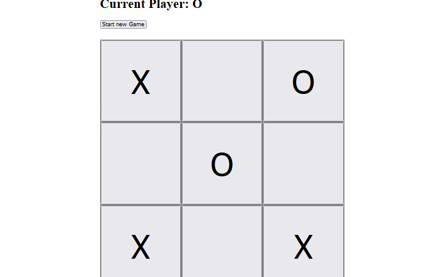
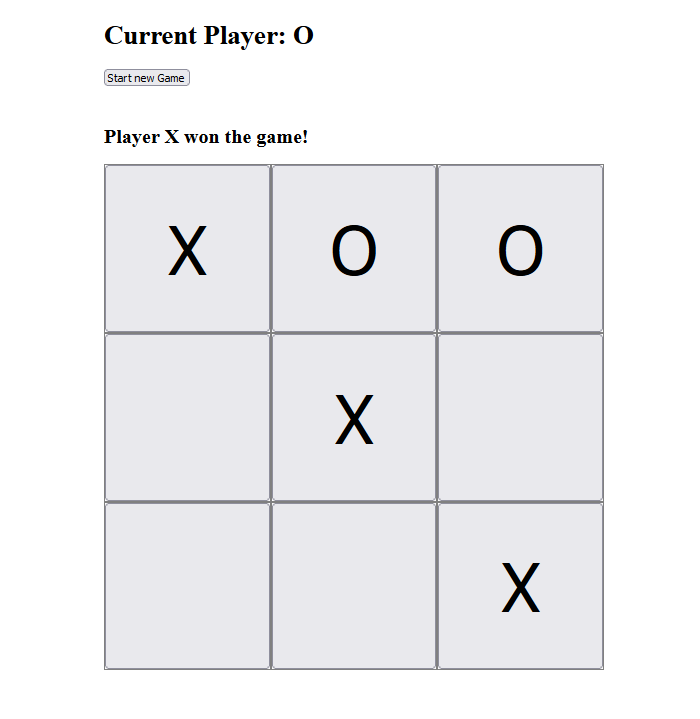
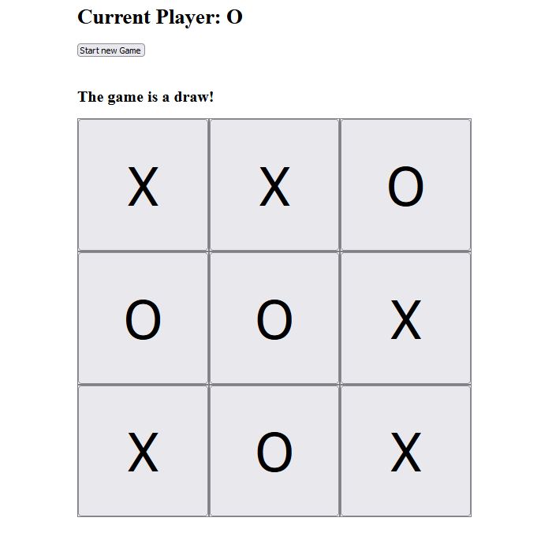

Angular, HTML, CSS, Javascript
This is a tic tac toe game made using the Angular framework. When the game starts there is an indication on the top of who's turn is to play, which updates after each move.
After each move the game checks the board to see if there's a winner and if that's the case then a message is shown saying which of the players won. If there's no winner and the maximum number of moves was already made, it will be considered a draw and a message will be shown accordingly.
A new game can be started by pressing the "Start new game" button placed above the board.
